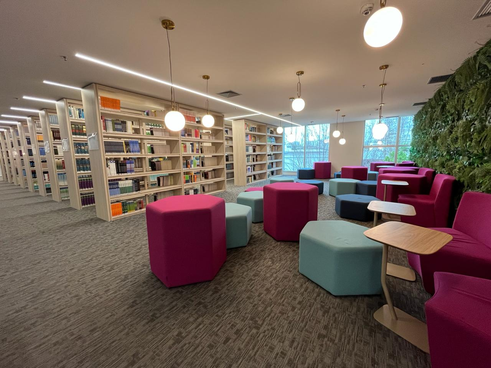

Um lugar para ler, conversar e viver o futebol.
Na Biblioteca da Bola você encontra livros, revistas e biografias sobre a história do futebol brasileiro e mundial. Também há rodas de conversa, jogos de tabuleiro e sessões com partidas clássicas. Tudo pensado para quem quer conhecer o esporte além dos 90 minutos.
O espaço é indicado para torcedores de todas as idades, estudantes e curiosos que gostam de aprender em companhia. Venha descobrir histórias que não passam na TV e conhecer pessoas que dividem a mesma paixão.
Planeje sua visita →